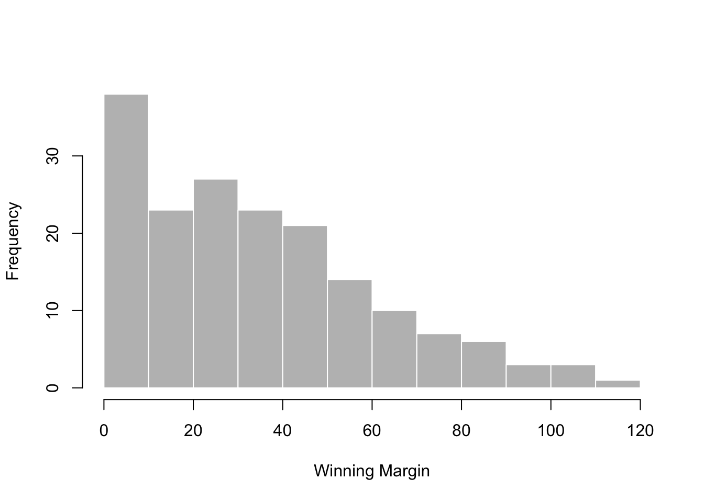
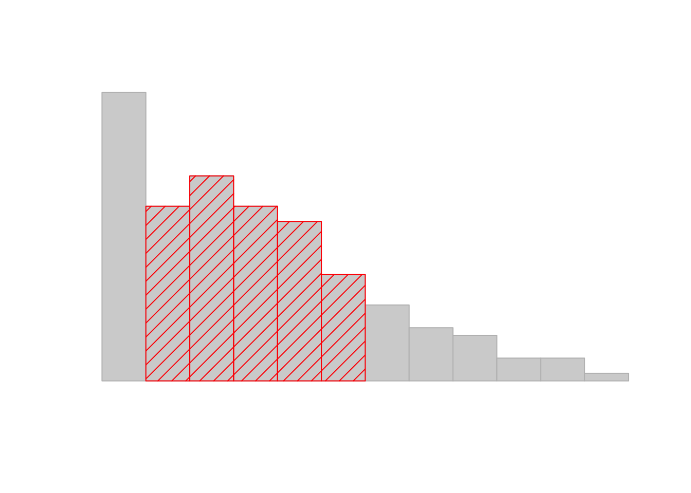

-- Name -- -- Class -- -- Size --
afl.finalists factor 400
afl.margins numeric 176 Descriptive Statistics - Introduction
Descriptive statistics
Any time that you get a new data set to look at, one of the first tasks that you have to do is find ways of summarising the data in a compact, easily understood fashion. This is what descriptive statistics (as opposed to inferential statistics) is all about. In fact, to many people the term “statistics” is synonymous with descriptive statistics. It is this topic that we’ll consider in this chapter, but before going into any details, let’s take a moment to get a sense of why we need descriptive statistics. To do this, let’s load the aflsmall.Rdata file, and use the who() function in the lsr package to see what variables are stored in the file:
There are two variables here, afl.finalists and afl.margins. We’ll focus a bit on these two variables in this chapter, so I’d better tell you what they are. Unlike most of data sets in this book, these are actually real data, relating to the Australian Football League (AFL) 1 The afl.margins variable contains the winning margin (number of points) for all 176 home and away games played during the 2010 season. The afl.finalists variable contains the names of all 400 teams that played in all 200 finals matches played during the period 1987 to 2010. Let’s have a look at the afl.margins variable:
[1] 56 31 56 8 32 14 36 56 19 1 3 104 43 44 72 9 28 25
[19] 27 55 20 16 16 7 23 40 48 64 22 55 95 15 49 52 50 10
[37] 65 12 39 36 3 26 23 20 43 108 53 38 4 8 3 13 66 67
[55] 50 61 36 38 29 9 81 3 26 12 36 37 70 1 35 12 50 35
[73] 9 54 47 8 47 2 29 61 38 41 23 24 1 9 11 10 29 47
[91] 71 38 49 65 18 0 16 9 19 36 60 24 25 44 55 3 57 83
[109] 84 35 4 35 26 22 2 14 19 30 19 68 11 75 48 32 36 39
[127] 50 11 0 63 82 26 3 82 73 19 33 48 8 10 53 20 71 75
[145] 76 54 44 5 22 94 29 8 98 9 89 1 101 7 21 52 42 21
[163] 116 3 44 29 27 16 6 44 3 28 38 29 10 10This output doesn’t make it easy to get a sense of what the data are actually saying. Just “looking at the data” isn’t a terribly effective way of understanding data. In order to get some idea about what’s going on, we need to calculate some descriptive statistics (this chapter) and draw some nice pictures (Chapter @ref(graphics). Since the descriptive statistics are the easier of the two topics, I’ll start with those, but nevertheless I’ll show you a histogram of the afl.margins data, since it should help you get a sense of what the data we’re trying to describe actually look like. But for what it’s worth, this histogram – which is shown in Figure @ref(fig:histogram1) – was generated using the hist() function. We’ll talk a lot more about how to draw histograms in Section @ref(hist). For now, it’s enough to look at the histogram and note that it provides a fairly interpretable representation of the afl.margins data.
load("materials/data/aflsmall.Rdata")
# draw the plot
hist( afl.margins, breaks=seq(0,120,10), border="white",
col="grey",
xlab="Winning Margin", main=""
)

afl.margins variable). As you might expect, the larger the margin, the less frequently you tend to see it.Measures of central tendency
Drawing pictures of the data, as I did in Figure @ref(fig:histogram1) is an excellent way to convey the “gist” of what the data is trying to tell you, it’s often extremely useful to try to condense the data into a few simple “summary” statistics. In most situations, the first thing that you’ll want to calculate is a measure of central tendency. That is, you’d like to know something about the “average” or “middle” of your data lies. The two most commonly used measures are the mean, median and mode; occasionally people will also report a trimmed mean. I’ll explain each of these in turn, and then discuss when each of them is useful.
The mean
The mean of a set of observations is just a normal, old-fashioned average: add all of the values up, and then divide by the total number of values. The first five AFL margins were 56, 31, 56, 8 and 32, so the mean of these observations is just: \[ \frac{56 + 31 + 56 + 8 + 32}{5} = \frac{183}{5} = 36.60 \] Of course, this definition of the mean isn’t news to anyone: averages (i.e., means) are used so often in everyday life that this is pretty familiar stuff. However, since the concept of a mean is something that everyone already understands, I’ll use this as an excuse to start introducing some of the mathematical notation that statisticians use to describe this calculation, and talk about how the calculations would be done in R.
The first piece of notation to introduce is \(N\), which we’ll use to refer to the number of observations that we’re averaging (in this case \(N = 5\)). Next, we need to attach a label to the observations themselves. It’s traditional to use \(X\) for this, and to use subscripts to indicate which observation we’re actually talking about. That is, we’ll use \(X_1\) to refer to the first observation, \(X_2\) to refer to the second observation, and so on, all the way up to \(X_N\) for the last one. Or, to say the same thing in a slightly more abstract way, we use \(X_i\) to refer to the \(i\)-th observation. Just to make sure we’re clear on the notation, the following table lists the 5 observations in the afl.margins variable, along with the mathematical symbol used to refer to it, and the actual value that the observation corresponds to:
| the observation | its symbol | the observed value |
|---|---|---|
| winning margin, game 1 | \(X_1\) | 56 points |
| winning margin, game 2 | \(X_2\) | 31 points |
| winning margin, game 3 | \(X_3\) | 56 points |
| winning margin, game 4 | \(X_4\) | 8 points |
| winning margin, game 5 | \(X_5\) | 32 points |
Okay, now let’s try to write a formula for the mean. By tradition, we use \(\bar{X}\) as the notation for the mean. So the calculation for the mean could be expressed using the following formula: \[ \bar{X} = \frac{X_1 + X_2 + ... + X_{N-1} + X_N}{N} \] This formula is entirely correct, but it’s terribly long, so we make use of the summation symbol \(\scriptstyle\sum\) to shorten it.2 If I want to add up the first five observations, I could write out the sum the long way, \(X_1 + X_2 + X_3 + X_4 +X_5\) or I could use the summation symbol to shorten it to this: \[ \sum_{i=1}^5 X_i \] Taken literally, this could be read as “the sum, taken over all \(i\) values from 1 to 5, of the value \(X_i\)”. But basically, what it means is “add up the first five observations”. In any case, we can use this notation to write out the formula for the mean, which looks like this: \[ \bar{X} = \frac{1}{N} \sum_{i=1}^N X_i \]
In all honesty, I can’t imagine that all this mathematical notation helps clarify the concept of the mean at all. In fact, it’s really just a fancy way of writing out the same thing I said in words: add all the values up, and then divide by the total number of items. However, that’s not really the reason I went into all that detail. My goal was to try to make sure that everyone reading this book is clear on the notation that we’ll be using throughout the book: \(\bar{X}\) for the mean, \(\scriptstyle\sum\) for the idea of summation, \(X_i\) for the \(i\)th observation, and \(N\) for the total number of observations. We’re going to be re-using these symbols a fair bit, so it’s important that you understand them well enough to be able to “read” the equations, and to be able to see that it’s just saying “add up lots of things and then divide by another thing”.
Calculating the mean in R
Okay that’s the maths, how do we get the magic computing box to do the work for us? If you really wanted to, you could do this calculation directly in R. For the first 5 AFL scores, do this just by typing it in as if R were a calculator…
… in which case R outputs the answer 36.6, just as if it were a calculator. However, that’s not the only way to do the calculations, and when the number of observations starts to become large, it’s easily the most tedious. Besides, in almost every real world scenario, you’ve already got the actual numbers stored in a variable of some kind, just like we have with the afl.margins variable. Under those circumstances, what you want is a function that will just add up all the values stored in a numeric vector. That’s what the sum() function does. If we want to add up all 176 winning margins in the data set, we can do so using the following command:3
If we only want the sum of the first five observations, then we can use square brackets to pull out only the first five elements of the vector. So the command would now be:
To calculate the mean, we now tell R to divide the output of this summation by five, so the command that we need to type now becomes the following:
Although it’s pretty easy to calculate the mean using the sum() function, we can do it in an even easier way, since R also provides us with the mean() function. To calculate the mean for all 176 games, we would use the following command:
However, since x is the first argument to the function, I could have omitted the argument name. In any case, just to show you that there’s nothing funny going on, here’s what we would do to calculate the mean for the first five observations:
As you can see, this gives exactly the same answers as the previous calculations.
The median
The second measure of central tendency that people use a lot is the median, and it’s even easier to describe than the mean. The median of a set of observations is just the middle value. As before let’s imagine we were interested only in the first 5 AFL winning margins: 56, 31, 56, 8 and 32. To figure out the median, we sort these numbers into ascending order: \[
8, 31, \mathbf{32}, 56, 56
\] From inspection, it’s obvious that the median value of these 5 observations is 32, since that’s the middle one in the sorted list (I’ve put it in bold to make it even more obvious). Easy stuff. But what should we do if we were interested in the first 6 games rather than the first 5? Since the sixth game in the season had a winning margin of 14 points, our sorted list is now \[
8, 14, \mathbf{31}, \mathbf{32}, 56, 56
\] and there are two middle numbers, 31 and 32. The median is defined as the average of those two numbers, which is of course 31.5. As before, it’s very tedious to do this by hand when you’ve got lots of numbers. To illustrate this, here’s what happens when you use R to sort all 176 winning margins. First, I’ll use the sort() function (discussed in Chapter @ref(datahandling)) to display the winning margins in increasing numerical order:
[1] 0 0 1 1 1 1 2 2 3 3 3 3 3 3 3 3 4 4
[19] 5 6 7 7 8 8 8 8 8 9 9 9 9 9 9 10 10 10
[37] 10 10 11 11 11 12 12 12 13 14 14 15 16 16 16 16 18 19
[55] 19 19 19 19 20 20 20 21 21 22 22 22 23 23 23 24 24 25
[73] 25 26 26 26 26 27 27 28 28 29 29 29 29 29 29 30 31 32
[91] 32 33 35 35 35 35 36 36 36 36 36 36 37 38 38 38 38 38
[109] 39 39 40 41 42 43 43 44 44 44 44 44 47 47 47 48 48 48
[127] 49 49 50 50 50 50 52 52 53 53 54 54 55 55 55 56 56 56
[145] 57 60 61 61 63 64 65 65 66 67 68 70 71 71 72 73 75 75
[163] 76 81 82 82 83 84 89 94 95 98 101 104 108 116The middle values are 30 and 31, so the median winning margin for 2010 was 30.5 points. In real life, of course, no-one actually calculates the median by sorting the data and then looking for the middle value. In real life, we use the median command:
which outputs the median value of 30.5.
Mean or median? What’s the difference?

 Knowing how to calculate means and medians is only a part of the story. You also need to understand what each one is saying about the data, and what that implies for when you should use each one. This is illustrated in Figure @ref(fig:meanmedian) the mean is kind of like the “centre of gravity” of the data set, whereas the median is the “middle value” in the data. What this implies, as far as which one you should use, depends a little on what type of data you’ve got and what you’re trying to achieve. As a rough guide:
Knowing how to calculate means and medians is only a part of the story. You also need to understand what each one is saying about the data, and what that implies for when you should use each one. This is illustrated in Figure @ref(fig:meanmedian) the mean is kind of like the “centre of gravity” of the data set, whereas the median is the “middle value” in the data. What this implies, as far as which one you should use, depends a little on what type of data you’ve got and what you’re trying to achieve. As a rough guide:
- If your data are nominal scale, you probably shouldn’t be using either the mean or the median. Both the mean and the median rely on the idea that the numbers assigned to values are meaningful. If the numbering scheme is arbitrary, then it’s probably best to use the mode (Section @ref(mode)) instead.
- If your data are ordinal scale, you’re more likely to want to use the median than the mean. The median only makes use of the order information in your data (i.e., which numbers are bigger), but doesn’t depend on the precise numbers involved. That’s exactly the situation that applies when your data are ordinal scale. The mean, on the other hand, makes use of the precise numeric values assigned to the observations, so it’s not really appropriate for ordinal data.
- For interval and ratio scale data, either one is generally acceptable. Which one you pick depends a bit on what you’re trying to achieve. The mean has the advantage that it uses all the information in the data (which is useful when you don’t have a lot of data), but it’s very sensitive to extreme values, as we’ll see in Section @ref(trimmedmean).
Let’s expand on that last part a little. One consequence is that there’s systematic differences between the mean and the median when the histogram is asymmetric (skewed; see Section @ref(skewandkurtosis)). This is illustrated in Figure @ref(fig:meanmedian) notice that the median (right hand side) is located closer to the “body” of the histogram, whereas the mean (left hand side) gets dragged towards the “tail” (where the extreme values are). To give a concrete example, suppose Bob (income $50,000), Kate (income $60,000) and Jane (income $65,000) are sitting at a table: the average income at the table is $58,333 and the median income is $60,000. Then Bill sits down with them (income $100,000,000). The average income has now jumped to $25,043,750 but the median rises only to $62,500. If you’re interested in looking at the overall income at the table, the mean might be the right answer; but if you’re interested in what counts as a typical income at the table, the median would be a better choice here.
A real life example
To try to get a sense of why you need to pay attention to the differences between the mean and the median, let’s consider a real life example. Since I tend to mock journalists for their poor scientific and statistical knowledge, I should give credit where credit is due. This is from an excellent article on the ABC news website4 24 September, 2010:
Senior Commonwealth Bank executives have travelled the world in the past couple of weeks with a presentation showing how Australian house prices, and the key price to income ratios, compare favourably with similar countries. “Housing affordability has actually been going sideways for the last five to six years,” said Craig James, the chief economist of the bank’s trading arm, CommSec.
This probably comes as a huge surprise to anyone with a mortgage, or who wants a mortgage, or pays rent, or isn’t completely oblivious to what’s been going on in the Australian housing market over the last several years. Back to the article:
CBA has waged its war against what it believes are housing doomsayers with graphs, numbers and international comparisons. In its presentation, the bank rejects arguments that Australia’s housing is relatively expensive compared to incomes. It says Australia’s house price to household income ratio of 5.6 in the major cities, and 4.3 nationwide, is comparable to many other developed nations. It says San Francisco and New York have ratios of 7, Auckland’s is 6.7, and Vancouver comes in at 9.3.
More excellent news! Except, the article goes on to make the observation that…
Many analysts say that has led the bank to use misleading figures and comparisons. If you go to page four of CBA’s presentation and read the source information at the bottom of the graph and table, you would notice there is an additional source on the international comparison – Demographia. However, if the Commonwealth Bank had also used Demographia’s analysis of Australia’s house price to income ratio, it would have come up with a figure closer to 9 rather than 5.6 or 4.3
That’s, um, a rather serious discrepancy. One group of people say 9, another says 4-5. Should we just split the difference, and say the truth lies somewhere in between? Absolutely not: this is a situation where there is a right answer and a wrong answer. Demographia are correct, and the Commonwealth Bank is incorrect. As the article points out
[An] obvious problem with the Commonwealth Bank’s domestic price to income figures is they compare average incomes with median house prices (unlike the Demographia figures that compare median incomes to median prices). The median is the mid-point, effectively cutting out the highs and lows, and that means the average is generally higher when it comes to incomes and asset prices, because it includes the earnings of Australia’s wealthiest people. To put it another way: the Commonwealth Bank’s figures count Ralph Norris’ multi-million dollar pay packet on the income side, but not his (no doubt) very expensive house in the property price figures, thus understating the house price to income ratio for middle-income Australians.
Couldn’t have put it better myself. The way that Demographia calculated the ratio is the right thing to do. The way that the Bank did it is incorrect. As for why an extremely quantitatively sophisticated organisation such as a major bank made such an elementary mistake, well… I can’t say for sure, since I have no special insight into their thinking, but the article itself does happen to mention the following facts, which may or may not be relevant:
[As] Australia’s largest home lender, the Commonwealth Bank has one of the biggest vested interests in house prices rising. It effectively owns a massive swathe of Australian housing as security for its home loans as well as many small business loans.
My, my.
Trimmed mean
One of the fundamental rules of applied statistics is that the data are messy. Real life is never simple, and so the data sets that you obtain are never as straightforward as the statistical theory says.5 This can have awkward consequences. To illustrate, consider this rather strange looking data set: \[ -100,2,3,4,5,6,7,8,9,10 \] If you were to observe this in a real life data set, you’d probably suspect that something funny was going on with the \(-100\) value. It’s probably an outlier, a value that doesn’t really belong with the others. You might consider removing it from the data set entirely, and in this particular case I’d probably agree with that course of action. In real life, however, you don’t always get such cut-and-dried examples. For instance, you might get this instead: \[ -15,2,3,4,5,6,7,8,9,12 \] The \(-15\) looks a bit suspicious, but not anywhere near as much as that \(-100\) did. In this case, it’s a little trickier. It might be a legitimate observation, it might not.
When faced with a situation where some of the most extreme-valued observations might not be quite trustworthy, the mean is not necessarily a good measure of central tendency. It is highly sensitive to one or two extreme values, and is thus not considered to be a robust measure. One remedy that we’ve seen is to use the median. A more general solution is to use a “trimmed mean”. To calculate a trimmed mean, what you do is “discard” the most extreme examples on both ends (i.e., the largest and the smallest), and then take the mean of everything else. The goal is to preserve the best characteristics of the mean and the median: just like a median, you aren’t highly influenced by extreme outliers, but like the mean, you “use” more than one of the observations. Generally, we describe a trimmed mean in terms of the percentage of observation on either side that are discarded. So, for instance, a 10% trimmed mean discards the largest 10% of the observations and the smallest 10% of the observations, and then takes the mean of the remaining 80% of the observations. Not surprisingly, the 0% trimmed mean is just the regular mean, and the 50% trimmed mean is the median. In that sense, trimmed means provide a whole family of central tendency measures that span the range from the mean to the median.
For our toy example above, we have 10 observations, and so a 10% trimmed mean is calculated by ignoring the largest value (i.e., 12) and the smallest value (i.e., -15) and taking the mean of the remaining values. First, let’s enter the data
Next, let’s calculate means and medians:
That’s a fairly substantial difference, but I’m tempted to think that the mean is being influenced a bit too much by the extreme values at either end of the data set, especially the \(-15\) one. So let’s just try trimming the mean a bit. If I take a 10% trimmed mean, we’ll drop the extreme values on either side, and take the mean of the rest:
which in this case gives exactly the same answer as the median. Note that, to get a 10% trimmed mean you write trim = .1, not trim = 10. In any case, let’s finish up by calculating the 5% trimmed mean for the afl.margins data,
Mode
The mode of a sample is very simple: it is the value that occurs most frequently. To illustrate the mode using the AFL data, let’s examine a different aspect to the data set. Who has played in the most finals? The afl.finalists variable is a factor that contains the name of every team that played in any AFL final from 1987-2010, so let’s have a look at it. To do this we will use the head() command. head() is useful when you’re working with a data.frame with a lot of rows since you can use it to tell you how many rows to return. There have been a lot of finals in this period so printing afl.finalists using print(afl.finalists) will just fill us the screen. The command below tells R we just want the first 25 rows of the data.frame.
[1] Hawthorn Melbourne Carlton Melbourne Hawthorn Carlton
[7] Melbourne Carlton Hawthorn Melbourne Melbourne Hawthorn
[13] Melbourne Essendon Hawthorn Geelong Geelong Hawthorn
[19] Collingwood Melbourne Collingwood West Coast Collingwood Essendon
[25] Collingwood
17 Levels: Adelaide Brisbane Carlton Collingwood Essendon Fitzroy ... Western BulldogsThere are actually 400 entries (aren’t you glad we didn’t print them all?). We could read through all 400, and count the number of occasions on which each team name appears in our list of finalists, thereby producing a frequency table. However, that would be mindless and boring: exactly the sort of task that computers are great at. So let’s use the table() function (discussed in more detail in Section @ref(freqtables)) to do this task for us:
afl.finalists
Adelaide Brisbane Carlton Collingwood
26 25 26 28
Essendon Fitzroy Fremantle Geelong
32 0 6 39
Hawthorn Melbourne North Melbourne Port Adelaide
27 28 28 17
Richmond St Kilda Sydney West Coast
6 24 26 38
Western Bulldogs
24 Now that we have our frequency table, we can just look at it and see that, over the 24 years for which we have data, Geelong has played in more finals than any other team. Thus, the mode of the finalists data is "Geelong". The core packages in R don’t have a function for calculating the mode6. However, I’ve included a function in the lsr package that does this. The function is called modeOf(), and here’s how you use it:
There’s also a function called maxFreq() that tells you what the modal frequency is. If we apply this function to our finalists data, we obtain the following:
Taken together, we observe that Geelong (39 finals) played in more finals than any other team during the 1987-2010 period.
One last point to make with respect to the mode. While it’s generally true that the mode is most often calculated when you have nominal scale data (because means and medians are useless for those sorts of variables), there are some situations in which you really do want to know the mode of an ordinal, interval or ratio scale variable. For instance, let’s go back to thinking about our afl.margins variable. This variable is clearly ratio scale (if it’s not clear to you, it may help to re-read Section @ref(scales)), and so in most situations the mean or the median is the measure of central tendency that you want. But consider this scenario… a friend of yours is offering a bet. They pick a football game at random, and (without knowing who is playing) you have to guess the exact margin. If you guess correctly, you win $50. If you don’t, you lose $1. There are no consolation prizes for “almost” getting the right answer. You have to guess exactly the right margin7 For this bet, the mean and the median are completely useless to you. It is the mode that you should bet on. So, we calculate this modal value
So the 2010 data suggest you should bet on a 3 point margin, and since this was observed in 8 of the 176 game (4.5% of games) the odds are firmly in your favour.
Measures of variability
The statistics that we’ve discussed so far all relate to central tendency. That is, they all talk about which values are “in the middle” or “popular” in the data. However, central tendency is not the only type of summary statistic that we want to calculate. The second thing that we really want is a measure of the variability of the data. That is, how “spread out” are the data? How “far” away from the mean or median do the observed values tend to be? For now, let’s assume that the data are interval or ratio scale, so we’ll continue to use the afl.margins data. We’ll use this data to discuss several different measures of spread, each with different strengths and weaknesses.
Range
The range of a variable is very simple: it’s the biggest value minus the smallest value. For the AFL winning margins data, the maximum value is 116, and the minimum value is 0. We can calculate these values in R using the max() and min() functions:
where I’ve omitted the output because it’s not interesting. The other possibility is to use the range() function; which outputs both the minimum value and the maximum value in a vector, like this:
Although the range is the simplest way to quantify the notion of “variability”, it’s one of the worst. Recall from our discussion of the mean that we want our summary measure to be robust. If the data set has one or two extremely bad values in it, we’d like our statistics not to be unduly influenced by these cases. If we look once again at our toy example of a data set containing very extreme outliers… \[ -100,2,3,4,5,6,7,8,9,10 \] … it is clear that the range is not robust, since this has a range of 110, but if the outlier were removed we would have a range of only 8.
Interquartile range
The interquartile range (IQR) is like the range, but instead of calculating the difference between the biggest and smallest value, it calculates the difference between the 25th quantile and the 75th quantile. Probably you already know what a quantile is (they’re more commonly called percentiles), but if not: the 10th percentile of a data set is the smallest number \(x\) such that 10% of the data is less than \(x\). In fact, we’ve already come across the idea: the median of a data set is its 50th quantile / percentile! R actually provides you with a way of calculating quantiles, using the (surprise, surprise) quantile() function. Let’s use it to calculate the median AFL winning margin:
And not surprisingly, this agrees with the answer that we saw earlier with the median() function. Now, we can actually input lots of quantiles at once, by specifying a vector for the probs argument. So lets do that, and get the 25th and 75th percentile:
And, by noting that \(50.5 - 12.75 = 37.75\), we can see that the interquartile range for the 2010 AFL winning margins data is 37.75. Of course, that seems like too much work to do all that typing, so R has a built in function called IQR() that we can use:
While it’s obvious how to interpret the range, it’s a little less obvious how to interpret the IQR. The simplest way to think about it is like this: the interquartile range is the range spanned by the “middle half” of the data. That is, one quarter of the data falls below the 25th percentile, one quarter of the data is above the 75th percentile, leaving the “middle half” of the data lying in between the two. And the IQR is the range covered by that middle half.
Mean absolute deviation
The two measures we’ve looked at so far, the range and the interquartile range, both rely on the idea that we can measure the spread of the data by looking at the quantiles of the data. However, this isn’t the only way to think about the problem. A different approach is to select a meaningful reference point (usually the mean or the median) and then report the “typical” deviations from that reference point. What do we mean by “typical” deviation? Usually, the mean or median value of these deviations! In practice, this leads to two different measures, the “mean absolute deviation (from the mean)” and the “median absolute deviation (from the median)”. From what I’ve read, the measure based on the median seems to be used in statistics, and does seem to be the better of the two, but to be honest I don’t think I’ve seen it used much in psychology. The measure based on the mean does occasionally show up in psychology though. In this section I’ll talk about the first one, and I’ll come back to talk about the second one later.
Since the previous paragraph might sound a little abstract, let’s go through the mean absolute deviation from the mean a little more slowly. One useful thing about this measure is that the name actually tells you exactly how to calculate it. Let’s think about our AFL winning margins data, and once again we’ll start by pretending that there’s only 5 games in total, with winning margins of 56, 31, 56, 8 and 32. Since our calculations rely on an examination of the deviation from some reference point (in this case the mean), the first thing we need to calculate is the mean, \(\bar{X}\). For these five observations, our mean is \(\bar{X} = 36.6\). The next step is to convert each of our observations \(X_i\) into a deviation score. We do this by calculating the difference between the observation \(X_i\) and the mean \(\bar{X}\). That is, the deviation score is defined to be \(X_i - \bar{X}\). For the first observation in our sample, this is equal to \(56 - 36.6 = 19.4\). Okay, that’s simple enough. The next step in the process is to convert these deviations to absolute deviations. As we discussed earlier when talking about the abs() function in R (Section @ref(usingfunctions)), we do this by converting any negative values to positive ones. Mathematically, we would denote the absolute value of \(-3\) as \(|-3|\), and so we say that \(|-3| = 3\). We use the absolute value function here because we don’t really care whether the value is higher than the mean or lower than the mean, we’re just interested in how close it is to the mean. To help make this process as obvious as possible, the table below shows these calculations for all five observations:
| the observation | its symbol | the observed value |
|---|---|---|
| winning margin, game 1 | \(X_1\) | 56 points |
| winning margin, game 2 | \(X_2\) | 31 points |
| winning margin, game 3 | \(X_3\) | 56 points |
| winning margin, game 4 | \(X_4\) | 8 points |
| winning margin, game 5 | \(X_5\) | 32 points |
Now that we have calculated the absolute deviation score for every observation in the data set, all that we have to do to calculate the mean of these scores. Let’s do that: \[ \frac{19.4 + 5.6 + 19.4 + 28.6 + 4.6}{5} = 15.52 \] And we’re done. The mean absolute deviation for these five scores is 15.52.
However, while our calculations for this little example are at an end, we do have a couple of things left to talk about. Firstly, we should really try to write down a proper mathematical formula. But in order do to this I need some mathematical notation to refer to the mean absolute deviation. Irritatingly, “mean absolute deviation” and “median absolute deviation” have the same acronym (MAD), which leads to a certain amount of ambiguity, and since R tends to use MAD to refer to the median absolute deviation, I’d better come up with something different for the mean absolute deviation. Sigh. What I’ll do is use AAD instead, short for average absolute deviation. Now that we have some unambiguous notation, here’s the formula that describes what we just calculated: \[ \mbox{}(X) = \frac{1}{N} \sum_{i = 1}^N |X_i - \bar{X}| \]
The last thing we need to talk about is how to calculate AAD in R. One possibility would be to do everything using low level commands, laboriously following the same steps that I used when describing the calculations above. However, that’s pretty tedious. You’d end up with a series of commands that might look like this:
X <- c(56, 31,56,8,32) # enter the data
X.bar <- mean( X ) # step 1. the mean of the data
AD <- abs( X - X.bar ) # step 2. the absolute deviations from the mean
AAD <- mean( AD ) # step 3. the mean absolute deviations
print( AAD ) # print the results[1] 15.52Each of those commands is pretty simple, but there’s just too many of them. And because I find that to be too much typing, the lsr package has a very simple function called aad() that does the calculations for you. If we apply the aad() function to our data, we get this:
No suprises there.
Variance
Although the mean absolute deviation measure has its uses, it’s not the best measure of variability to use. From a purely mathematical perspective, there are some solid reasons to prefer squared deviations rather than absolute deviations. If we do that, we obtain a measure is called the variance, which has a lot of really nice statistical properties that I’m going to ignore,8 and one massive psychological flaw that I’m going to make a big deal out of in a moment. The variance of a data set \(X\) is sometimes written as \(\mbox{Var}(X)\), but it’s more commonly denoted \(s^2\) (the reason for this will become clearer shortly). The formula that we use to calculate the variance of a set of observations is as follows: \[ \mbox{Var}(X) = \frac{1}{N} \sum_{i=1}^N \left( X_i - \bar{X} \right)^2 \] \[\mbox{Var}(X) = \frac{\sum_{i=1}^N \left( X_i - \bar{X} \right)^2}{N}\] As you can see, it’s basically the same formula that we used to calculate the mean absolute deviation, except that instead of using “absolute deviations” we use “squared deviations”. It is for this reason that the variance is sometimes referred to as the “mean square deviation”.
Now that we’ve got the basic idea, let’s have a look at a concrete example. Once again, let’s use the first five AFL games as our data. If we follow the same approach that we took last time, we end up with the following table:
| Notation [English] | \(i\) [which game] | \(X_i\) [value] | \(X_i - \bar{X}\) [deviation from mean] | \((X_i - \bar{X})^2\) [absolute deviation] |
|---|---|---|---|---|
| 1 | 56 | 19.4 | 376.36 | |
| 2 | 31 | -5.6 | 31.36 | |
| 3 | 56 | 19.4 | 376.36 | |
| 4 | 8 | -28.6 | 817.96 | |
| 5 | 32 | -4.6 | 21.16 |
That last column contains all of our squared deviations, so all we have to do is average them. If we do that by typing all the numbers into R by hand…
… we end up with a variance of 324.64. Exciting, isn’t it? For the moment, let’s ignore the burning question that you’re all probably thinking (i.e., what the heck does a variance of 324.64 actually mean?) and instead talk a bit more about how to do the calculations in R, because this will reveal something very weird.
As always, we want to avoid having to type in a whole lot of numbers ourselves. And as it happens, we have the vector X lying around, which we created in the previous section. With this in mind, we can calculate the variance of X by using the following command,
and as usual we get the same answer as the one that we got when we did everything by hand. However, I still think that this is too much typing. Fortunately, R has a built in function called var() which does calculate variances. So we could also do this…
and you get the same… no, wait… you get a completely different answer. That’s just weird. Is R broken? Is this a typo? Is Dan an idiot?
As it happens, the answer is no.9 It’s not a typo, and R is not making a mistake. To get a feel for what’s happening, let’s stop using the tiny data set containing only 5 data points, and switch to the full set of 176 games that we’ve got stored in our afl.margins vector. First, let’s calculate the variance by using the formula that I described above:
Now let’s use the var() function:
Hm. These two numbers are very similar this time. That seems like too much of a coincidence to be a mistake. And of course it isn’t a mistake. In fact, it’s very simple to explain what R is doing here, but slightly trickier to explain why R is doing it. So let’s start with the “what”. What R is doing is evaluating a slightly different formula to the one I showed you above. Instead of averaging the squared deviations, which requires you to divide by the number of data points \(N\), R has chosen to divide by \(N-1\). In other words, the formula that R is using is this one
\[
\frac{1}{N-1} \sum_{i=1}^N \left( X_i - \bar{X} \right)^2
\] It’s easy enough to verify that this is what’s happening, as the following command illustrates:
This is the same answer that R gave us originally when we calculated var(X) originally. So that’s the what. The real question is why R is dividing by \(N-1\) and not by \(N\). After all, the variance is supposed to be the mean squared deviation, right? So shouldn’t we be dividing by \(N\), the actual number of observations in the sample? Well, yes, we should. However, as we’ll discuss in Chapter @ref(estimation), there’s a subtle distinction between “describing a sample” and “making guesses about the population from which the sample came”. Up to this point, it’s been a distinction without a difference. Regardless of whether you’re describing a sample or drawing inferences about the population, the mean is calculated exactly the same way. Not so for the variance, or the standard deviation, or for many other measures besides. What I outlined to you initially (i.e., take the actual average, and thus divide by \(N\)) assumes that you literally intend to calculate the variance of the sample. Most of the time, however, you’re not terribly interested in the sample in and of itself. Rather, the sample exists to tell you something about the world. If so, you’re actually starting to move away from calculating a “sample statistic”, and towards the idea of estimating a “population parameter”. However, I’m getting ahead of myself. For now, let’s just take it on faith that R knows what it’s doing, and we’ll revisit the question later on when we talk about estimation in Chapter @ref(estimation).
Okay, one last thing. This section so far has read a bit like a mystery novel. I’ve shown you how to calculate the variance, described the weird “\(N-1\)” thing that R does and hinted at the reason why it’s there, but I haven’t mentioned the single most important thing… how do you interpret the variance? Descriptive statistics are supposed to describe things, after all, and right now the variance is really just a gibberish number. Unfortunately, the reason why I haven’t given you the human-friendly interpretation of the variance is that there really isn’t one. This is the most serious problem with the variance. Although it has some elegant mathematical properties that suggest that it really is a fundamental quantity for expressing variation, it’s completely useless if you want to communicate with an actual human… variances are completely uninterpretable in terms of the original variable! All the numbers have been squared, and they don’t mean anything anymore. This is a huge issue. For instance, according to the table I presented earlier, the margin in game 1 was “376.36 points-squared higher than the average margin”. This is exactly as stupid as it sounds; and so when we calculate a variance of 324.64, we’re in the same situation. I’ve watched a lot of footy games, and never has anyone referred to “points squared”. It’s not a real unit of measurement, and since the variance is expressed in terms of this gibberish unit, it is totally meaningless to a human.
Standard deviation
Okay, suppose that you like the idea of using the variance because of those nice mathematical properties that I haven’t talked about, but – since you’re a human and not a robot – you’d like to have a measure that is expressed in the same units as the data itself (i.e., points, not points-squared). What should you do? The solution to the problem is obvious: take the square root of the variance, known as the standard deviation, also called the “root mean squared deviation”, or RMSD. This solves out problem fairly neatly: while nobody has a clue what “a variance of 324.68 points-squared” really means, it’s much easier to understand “a standard deviation of 18.01 points”, since it’s expressed in the original units. It is traditional to refer to the standard deviation of a sample of data as \(s\), though “sd” and “std dev.” are also used at times. Because the standard deviation is equal to the square root of the variance, you probably won’t be surprised to see that the formula is: \[
s = \sqrt{ \frac{1}{N} \sum_{i=1}^N \left( X_i - \bar{X} \right)^2 }
\] and the R function that we use to calculate it is sd(). However, as you might have guessed from our discussion of the variance, what R actually calculates is slightly different to the formula given above. Just like the we saw with the variance, what R calculates is a version that divides by \(N-1\) rather than \(N\). For reasons that will make sense when we return to this topic in Chapter@refch:estimation I’ll refer to this new quantity as \(\hat\sigma\) (read as: “sigma hat”), and the formula for this is \[
\hat\sigma = \sqrt{ \frac{1}{N-1} \sum_{i=1}^N \left( X_i - \bar{X} \right)^2 }
\] With that in mind, calculating standard deviations in R is simple:
Interpreting standard deviations is slightly more complex. Because the standard deviation is derived from the variance, and the variance is a quantity that has little to no meaning that makes sense to us humans, the standard deviation doesn’t have a simple interpretation. As a consequence, most of us just rely on a simple rule of thumb: in general, you should expect 68% of the data to fall within 1 standard deviation of the mean, 95% of the data to fall within 2 standard deviation of the mean, and 99.7% of the data to fall within 3 standard deviations of the mean. This rule tends to work pretty well most of the time, but it’s not exact: it’s actually calculated based on an assumption that the histogram is symmetric and “bell shaped”.10 As you can tell from looking at the AFL winning margins histogram in Figure @ref(fig:histogram1), this isn’t exactly true of our data! Even so, the rule is approximately correct. As it turns out, 65.3% of the AFL margins data fall within one standard deviation of the mean. This is shown visually in Figure @ref(fig:aflsd).

Summary
Calculating some basic descriptive statistics is one of the very first things you do when analysing real data, and descriptive statistics are much simpler to understand than inferential statistics, so like every other statistics textbook I’ve started with descriptives. In this chapter, we talked about the following topics:
- Measures of central tendency. Broadly speaking, central tendency measures tell you where the data are. There’s three measures that are typically reported in the literature: the mean, median and mode. (Section @ref(centraltendency))
- Measures of variability. In contrast, measures of variability tell you about how “spread out” the data are. The key measures are: range, standard deviation, interquartile reange (Section @ref(var))
- Getting summaries of variables in R. Since this book focuses on doing data analysis in R, we spent a bit of time talking about how descriptive statistics are computed in R. (Section @ref(summary) and @ref(groupdescriptives))
- Standard scores. The \(z\)-score is a slightly unusual beast. It’s not quite a descriptive statistic, and not quite an inference. We talked about it in Section @ref(zscore). Make sure you understand that section: it’ll come up again later.
- Correlations. Want to know how strong the relationship is between two variables? Calculate a correlation. (Section @ref(correl))
- Missing data. Dealing with missing data is one of those frustrating things that data analysts really wish the didn’t have to think about. In real life it can be hard to do well. For the purpose of this book, we only touched on the basics in Section @ref(missing)
In the next section we’ll move on to a discussion of how to draw pictures! Everyone loves a pretty picture, right? But before we do, I want to end on an important point. A traditional first course in statistics spends only a small proportion of the class on descriptive statistics, maybe one or two lectures at most. The vast majority of the lecturer’s time is spent on inferential statistics, because that’s where all the hard stuff is. That makes sense, but it hides the practical everyday importance of choosing good descriptives. With that in mind…
Epilogue: Good descriptive statistics are descriptive!
The death of one man is a tragedy. The death of millions is a statistic.
– Josef Stalin, Potsdam 1945
950,000 – 1,200,000
– Estimate of Soviet repression deaths, 1937-1938 [@Ellman2002]
Stalin’s infamous quote about the statistical character death of millions is worth giving some thought. The clear intent of his statement is that the death of an individual touches us personally and its force cannot be denied, but that the deaths of a multitude are incomprehensible, and as a consequence mere statistics, more easily ignored. I’d argue that Stalin was half right. A statistic is an abstraction, a description of events beyond our personal experience, and so hard to visualise. Few if any of us can imagine what the deaths of millions is “really” like, but we can imagine one death, and this gives the lone death its feeling of immediate tragedy, a feeling that is missing from Ellman’s cold statistical description.
Yet it is not so simple: without numbers, without counts, without a description of what happened, we have no chance of understanding what really happened, no opportunity event to try to summon the missing feeling. And in truth, as I write this, sitting in comfort on a Saturday morning, half a world and a whole lifetime away from the Gulags, when I put the Ellman estimate next to the Stalin quote a dull dread settles in my stomach and a chill settles over me. The Stalinist repression is something truly beyond my experience, but with a combination of statistical data and those recorded personal histories that have come down to us, it is not entirely beyond my comprehension. Because what Ellman’s numbers tell us is this: over a two year period, Stalinist repression wiped out the equivalent of every man, woman and child currently alive in the city where I live. Each one of those deaths had it’s own story, was it’s own tragedy, and only some of those are known to us now. Even so, with a few carefully chosen statistics, the scale of the atrocity starts to come into focus.
Thus it is no small thing to say that the first task of the statistician and the scientist is to summarise the data, to find some collection of numbers that can convey to an audience a sense of what has happened. This is the job of descriptive statistics, but it’s not a job that can be told solely using the numbers. You are a data analyst, not a statistical software package. Part of your job is to take these statistics and turn them into a description. When you analyse data, it is not sufficient to list off a collection of numbers. Always remember that what you’re really trying to do is communicate with a human audience. The numbers are important, but they need to be put together into a meaningful story that your audience can interpret. That means you need to think about framing. You need to think about context. And you need to think about the individual events that your statistics are summarising.
Footnotes
Note for non-Australians: the AFL is an Australian rules football competition. You don’t need to know anything about Australian rules in order to follow this section.↩︎
The choice to use \(\Sigma\) to denote summation isn’t arbitrary: it’s the Greek upper case letter sigma, which is the analogue of the letter S in that alphabet. Similarly, there’s an equivalent symbol used to denote the multiplication of lots of numbers: because multiplications are also called “products”, we use the \(\Pi\) symbol for this; the Greek upper case pi, which is the analogue of the letter P.↩︎
Note that, just as we saw with the combine function
c()and the remove functionrm(), thesum()function has unnamed arguments. I’ll talk about unnamed arguments later in Section @ref(dotsargument), but for now let’s just ignore this detail.↩︎www.abc.net.au/news/stories/2010/09/24/3021480.htm↩︎
Or at least, the basic statistical theory – these days there is a whole subfield of statistics called robust statistics that tries to grapple with the messiness of real data and develop theory that can cope with it.↩︎
As we saw earlier, it does have a function called
mode(), but it does something completely different.↩︎This is called a “0-1 loss function”, meaning that you either win (1) or you lose (0), with no middle ground.↩︎
Well, I will very briefly mention the one that I think is coolest, for a very particular definition of “cool”, that is. Variances are additive. Here’s what that means: suppose I have two variables \(X\) and \(Y\), whose variances are \(\mbox{Var}](X)\) and \(\mbox{Var}(Y)\) respectively. Now imagine I want to define a new variable \(Z\) that is the sum of the two, \(Z = X+Y\). As it turns out, the variance of \(Z\) is equal to \(\mbox{Var}(X) + \mbox{Var}(Y)\). This is a very useful property, but it’s not true of the other measures that I talk about in this section.↩︎
With the possible exception of the third question.↩︎
Strictly, the assumption is that the data are normally distributed, which is an important concept that we’ll discuss more in Chapter @ref(probability), and will turn up over and over again later in the book.↩︎